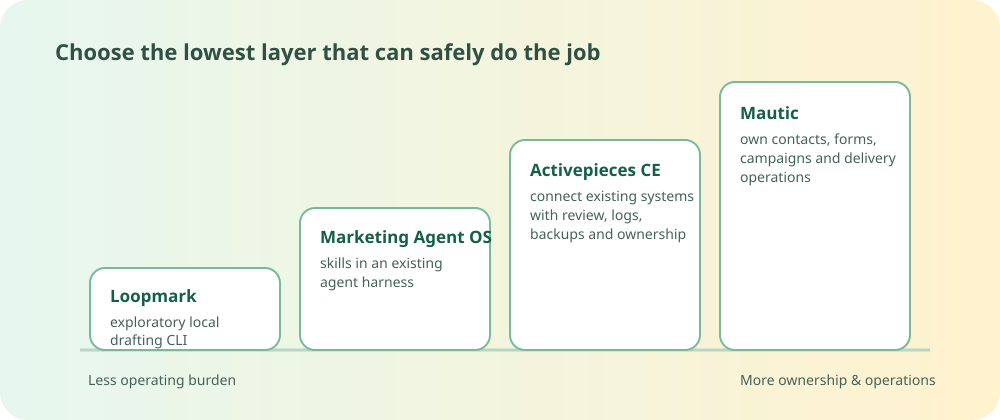

Research library updated · 26 Sep 2026
Choose the layer before you install an agent.
A decision-first field guide to a platform, an orchestrator, a harness library, and one narrowly retained exploratory local drafting CLI. Start with the smallest layer that can safely do the job.
Make a safe first choice
Want the compiled research behind the choices? Start in the research library, read the four-layer comparison, or inspect the sources and uncertainty notes.
Four layers, four different operating boundaries

The starter shortlist
Mautic
For self-hosted contacts, forms, campaigns, and lifecycle email when you can operate the database, mail transport, scheduler or worker, and recovery.
Not for: a quick drafting experiment or a simple SaaS-to-SaaS link.
Activepieces CE
For human-reviewed flows across systems you already own. Its deployment and secrets still need an operator.
Not for: a CRM, consent ledger, or mail service.
Marketing Agent OS
For reusable marketing instructions inside an approved coding-agent harness.
Not for: a hosted app, scheduler, credentials vault, or campaign delivery system.
Loopmark Agent
For a technical solo operator’s small local drafting experiment with fictional data and social credentials absent.
Not for: team approvals, a managed scheduler, CRM work, or production/unattended publishing.